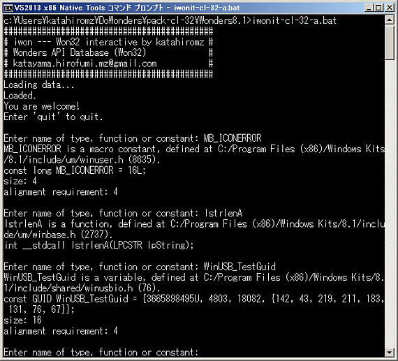

Updated: 2015.4.12
Wonders API is C/Win32 Parser and Windows API database project. It will provide full accessibility to Win32 API on many programming languages. We need your support. Contact me or pull request me.
Everything was sanitized. We have implemented "compound values" now.
These zip files below contains "iwonit" programs. You can easily check types, enums, functions, constants or macros by "iwonit".

Copyright (C) 2015 Katayama Hirofumi MZ (katahiromz). All Rights Reserved.